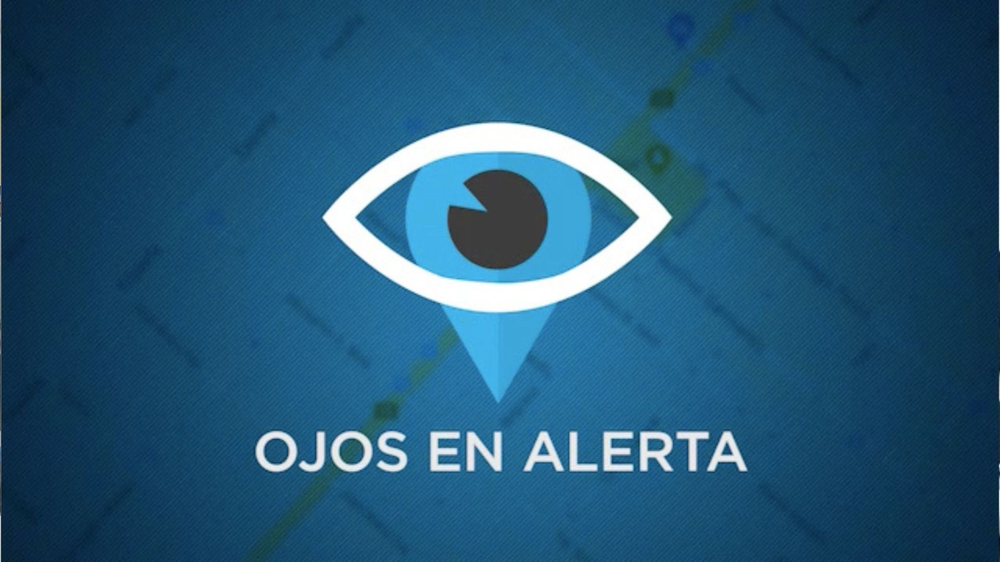

🤝 Servicio a la comunidad
Información útil para vecinos de Ceres: emergencias, teléfonos locales, clima y acceso directo a Ojos en Alerta.

📞 Teléfonos útiles
👁️ Ojos en Alerta
Enviar una alerta por WhatsApp
Ojos en Alerta fue implementado en Ceres como herramienta de participación ciudadana conectada con el Centro de Coordinación y Control. Permite enviar mensajes, audios, fotos, videos y ubicación ante situaciones sospechosas, accidentes o hechos que requieran aviso.
💬 Escribir por WhatsApp⚠️ Para emergencias inmediatas, utilizá 911. Ojos en Alerta Ceres: +54 9 3491 53-3027.
🌦️ Pronóstico oficial — Ceres
Pronóstico del Servicio Meteorológico Nacional para la localidad.
🌡️ Estación meteorológica automática
Datos de la estación EMA BV Ceres - CMMC SAT · ICERES21, de Bomberos Voluntarios Ceres.
📲 Tener “Servicio a la comunidad” como acceso directo
La página está preparada para instalarse como una aplicación/acceso directo cuando el navegador lo permita.
📱 Android / Chrome
Buscá “Instalar aplicación” o “Agregar a pantalla de inicio” en el menú ⋮.
Buscá “Instalar aplicación” o “Agregar a pantalla de inicio” en el menú ⋮.
💻 PC / Chrome o Edge
Buscá el ícono de instalar en la barra de direcciones o “Instalar aplicación” en el menú.
Buscá el ícono de instalar en la barra de direcciones o “Instalar aplicación” en el menú.
🍎 iPhone / iPad
Compartir → “Agregar a pantalla de inicio”.
Compartir → “Agregar a pantalla de inicio”.
ℹ️ Los números de emergencia son servicios oficiales. Los teléfonos locales se muestran como referencia y conviene verificarlos periódicamente.